Wordpress
62 Prozent Markanteil. 455 Millionen Websites. Diese beeindruckenden Zahlen können
nur vom CMS-Star
Wordpress stammen. Vom kleinen Privat-Blog bis hin zu Firmenauftritten wie New York Times und eBay ist alles
machbar.
Doch um auch das letzte Quäntchen Leistung aus der Software herauszukitzeln und sich vom Meer an
Standard-Websites abzusetzen, sind zwei Dinge entscheidend: Plug-Ins und Themes.
Android
Bereits 2019 wurden Über 2,5 Milliarden Geräte werden mit Android betrieben. Diese zahl
wächst
pro Monat um ca. 100 Millionen Geräte an.
Vom kleinen Helferlein bis hin zur großen App-Suit verlassen sich über 15.000
zufriedenen Benutzer auf uns.
Über die Spezifikation, die Implementierung, den Test bis hin zur Wartung können
Sie sich auf einen kompetenten Ansprechpartner verlassen.
Nextcloud
Die Möglichkeit, Daten bei Anbietern wie Google, Microsoft oder Amazon in der Cloud abzulegen
ist verlockend -
günstig, ausfallsicher, schnell. Doch der Schutz privater oder firmeninterner Daten wird immer
wichtiger.
Eine Lösung für dieses Problem stellt Nextcloud
dar - die ganz private Cloud mit vollem Funktionsumfang zum selber installieren.
Dank aktiver Beteiligung an der Entwicklung sind wir bei den Neuerungen immer ganz vorne mit
dabei und bieten unter anderem Android Clients für
Deck und
Notes an.

Angular
Das von Google entwickelte Single-Page-Application
Framework eignet sich hervorragend für mittlere und große Web Applikationen. Auf dieser
Basis entwickeln wir skalierbare Apps, welche mit Ihrem Unternehmen wachsen.
Mit der Material-Erweiterung geben wir
Ihrer Anwendung ein professionelles und modernes Cross-Platform Look & Feel, wobei Ihre
einzigartige
Firmenidentität sich in Ihrem Projekt dennoch widerspiegelt.
Individuelle Lösungen
Als Dienstleister drängen wir Ihnen keine eigenen Lösungen auf. Stattdessen passen wir uns an Ihr
bestehendes Ökosystem an und arbeiten mit den Methoden, Programmiersprachen, Frameworks und APIs
Ihrer Wahl.
Unsere Kenntnisse umfassen neben sämtlichen elementaren Web-Technologien auch Java & Kotlin, PHP,
sowie eine breite Palette an Tools und Maßnahmen für die Sicherheit, Qualitätssicherung und den
operativen
Betrieb Ihres Projektes.
Beratung & Consulting
Für alle aufgeführten Bereiche bieten wir neben Design & Implementierung auch Reviews und reine
Beratungsfunktionen an.
Selbstverständlich ist ein erstes Beratungsgespräch zur Ermittlung Ihrer Bedürfnisse völlig
unverbindlich und kostenlos. Auf Anfrage halten wir auch Gruppen-Seminare zu Wunschthemen ab,
um in speziellen Bereichen Grundkenntnisse oder tiefergehendes Wissen zu vermitteln.
 Niedermann IT
Niedermann IT